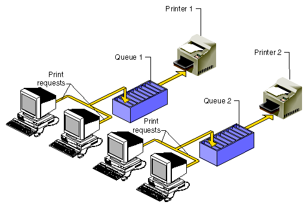
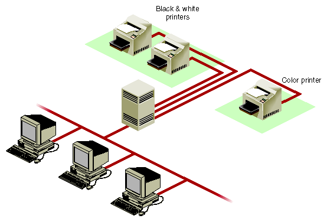

Next | Prev | Up | Top | Contents | Index
Understanding the lp Spooler
The line printer (lp) spooling utility is software that manages the print spooling system. Spooling is a technique that temporarily stores data until it is ready to be processed (in this case, by your printer). For lp spooling, a file (or group of files) to be printed is stored in a queue until a printer becomes available, as shown in Figure 2-1. When the printer is available, the next file in the queue is printed.

Figure 2-1 : Print Spooling
lp spooling allows background printing; users can use their workstations while their print jobs await the printer. With lp spooling, printers can be shared among many users. The flow of printing is regulated by the lp spooling utility.
The user interface to lp is a series of user and administrator commands that permit control of individual print jobs and management of printer resources.
Terms
Throughout this chapter, these terms represent important concepts in the lp spooling system:
- printer
- A logical name that points to an interface file, which represents a physical device, that is, the actual printer.
- class
- The name given to an ordered list of one or more printers. A printer may be assigned to more than one class but need not be a member of any class. Figure 2-2 shows printers divided into two classes: one for black-and-white printers and one for color printers.
- destination
- The place an lp request is sent to await printing. The destination may be a specific printer or a class of printers. An output request sent to a specific printer is printed only by that printer; a request sent to a class of printers is printed by the first available printer in its class. Default destinations are initially set up but can later be modified, as needed.

Figure 2-2 : Printer Classes
- Terms
-
Next | Prev | Up | Top | Contents | Index